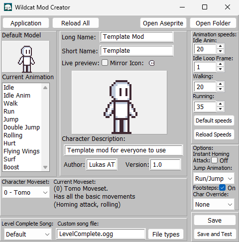
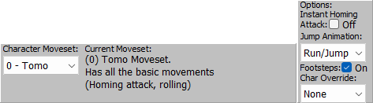
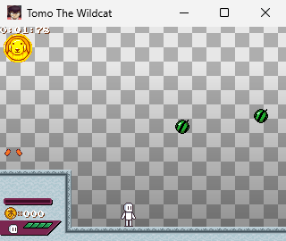

Previous (Creating or opening mod)
Mod Creator Screen Guide
Yeah... it's a lot to grasp on, so I'll try to explain everything very clearly.

- Opens the documentation (this) in your default browser.
- Documentation
- Exit to main screen
- Go back to the main screen of the mod creator.
- Close App
- Close the mod creator.
- Reload all the assets from the mod's folder.
- Opens your all of your arts assets on it's own Aseprite window.
- More info on the Aseprite setup section
- Opens your mod's folder.

-
Here, you're able to preview the animations used in-game by clicking any element on the animation list.
-
The "Default Model" let's you see how the selected animation plays, so you can use it as a reference for your character's sprites.
Here You can see the main properties you character will have.

- The name the character will have on menus. (Limited to 20 characters.)
- The name the other characters will refer your character as during interactions or dialogues. (Limited to 20 characters.)
- Live preview of your character's sprites, this will also play the animation selected on the Animation section.
- Mirror
- If checked, you'll be able to see your character looking at the right.
- Icon
- This will show your character's life icon (icon.png)
It will only update when the "Reload All" on the top bar is clicked.
- Your character's description. (Limited to 64 characters.)
- How you will be credited in-game. (Limited to 20 characters.)
- Your mod's version. (Limited to 9 characters.)
Here You can setup the animation speeds of your character's animations.

- Here you can input the speed your animations have in the scale of 0% to 100%.
The game runs at locked 60FPS, so, for example, 20% speed would be the 20% of 60FPS (12FPS)
You can also preview the current speed of each animation on the animation and character preview sections.
- Here you can input the animation frame your idle animation will loop back to after it ends.
The value can go from 0 (first frame) to 7 (last frame);
0 = idle animation loops from first frame.
7 = idle animation doesn't loop.
any in-between = animation will loop from said frame.
- Sets the speed boxes to the game's default values (20%, 20% and 35%)
- Reloads the speed values from the mod.ini value (in case you mess them up and want to go back to the last time you saved.)
Here You can setup your character's movements.

- Lets you select between all the default characters' movesets;
- Tomo: Has all the basic movements (Homing attack, rolling)
- Kagura: Same as Tomo but with a speed buff.
(You have to activate her instant homing attack manually)
- Osaka: Slower character but has an higher jump and floatier physics.
You also get a shield every time you touch a checkpoint.
- Chiyo: Slower character but has an higher jump and floatier physics.
Holding the jump button in the air will make her fly.
- Sakaki: Similar to Kagura, she has a speed buff.
Pressing the homing attack button while no enemy is targeted will perform an air dash.
- Yomi: She has a heavier jump and also has a bounce move she can use to keep momentum.
- Instant Homing Attack
- Makes you instantly teleport to the current target when you press the homing attack button
- Jump Animation
- Has 2 options for the jumping animation:
Run/Jump: the running animation will play over the jump animation if you jump while running (default)
Jump Only: Will always play the jump animation if you jump.
- Footsteps
- Toggle for the footsteps sounds when running.
- Char Override
- Lets you choose the character your mod will replace for in-game events.
Options: None, Tomo, Osaka, Chiyo, Yukari, Nyamo, Sakaki, Yomi, Kagura, Kaori and Chihiro.
For Example, if you set the value to "Sakaki" it will make Sakaki not appear in the hubworld, and play the story as if you were playing as vanilla Sakaki, that way you avoid having duplicates.
Here You can save or test your progress and change the music.

- Lets you choose between the default music or your custom file.
Default: Your selected character override's level complete song
(Ex: If the Character Override is set to Kagura, then your level complete song will be her song.)
Custom: Will play the song you put in the "Custom Song file" input box.
- Shows you a window with the supported file types for music;
.ogg (Recommended) .mp3 and .wav
- Will save all your progress.
- Saves your progress and starts a test room where you can try out your mod.
